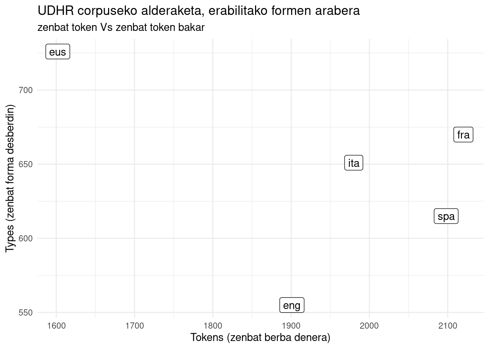
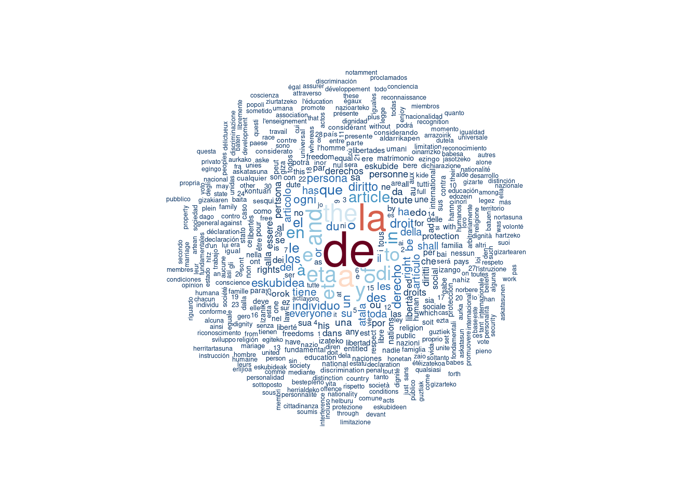
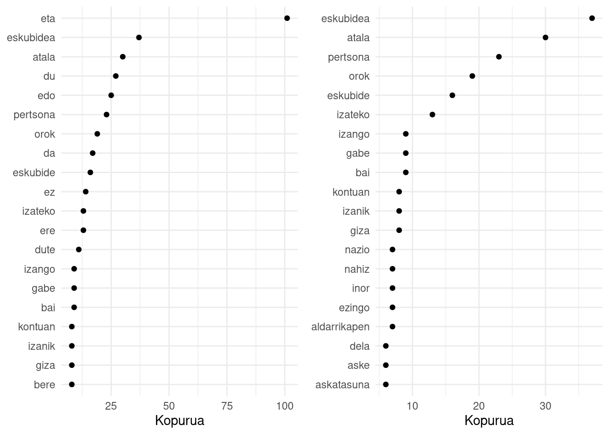
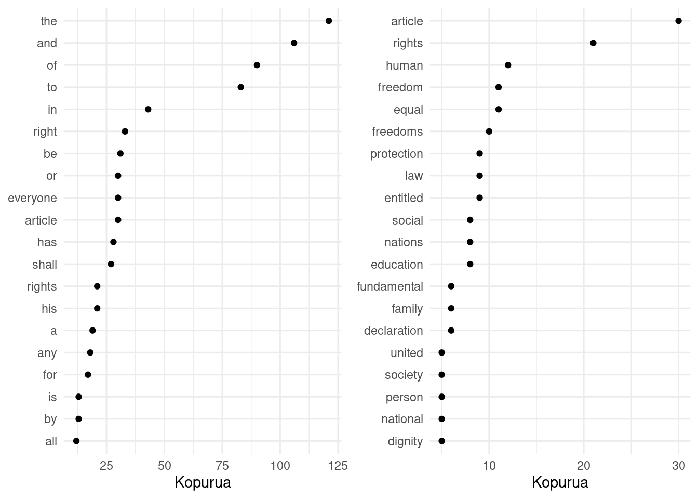
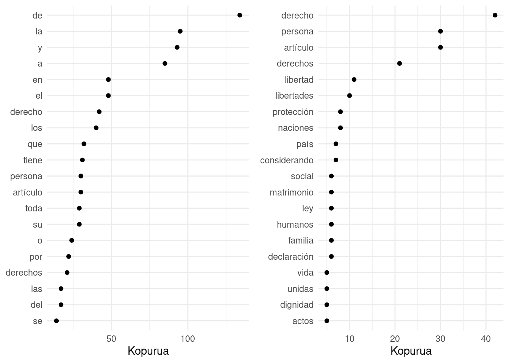
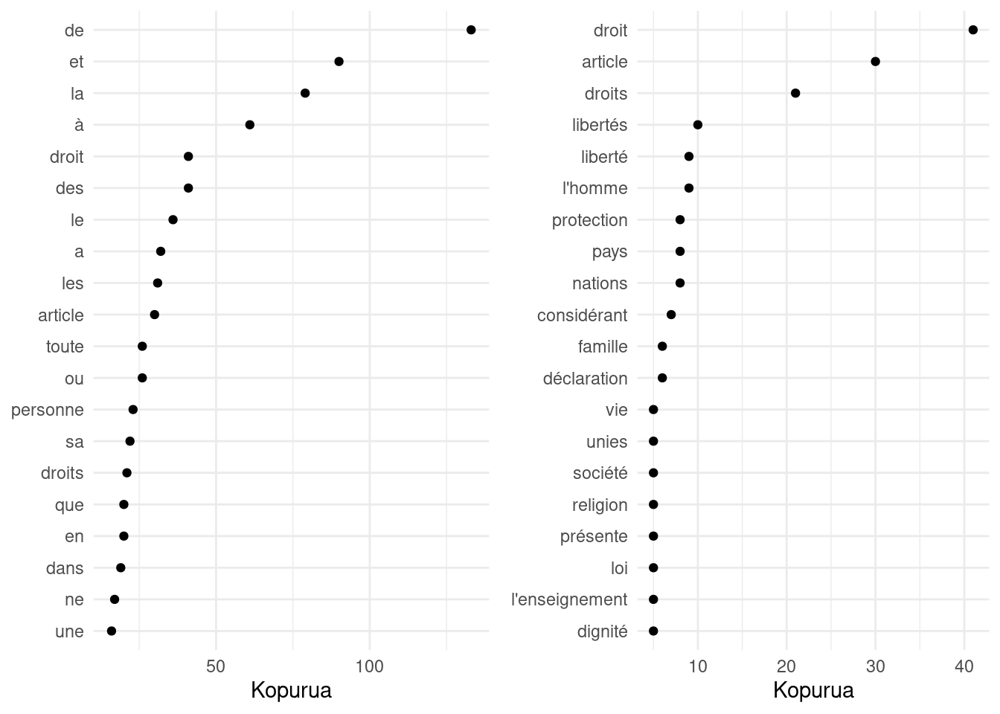
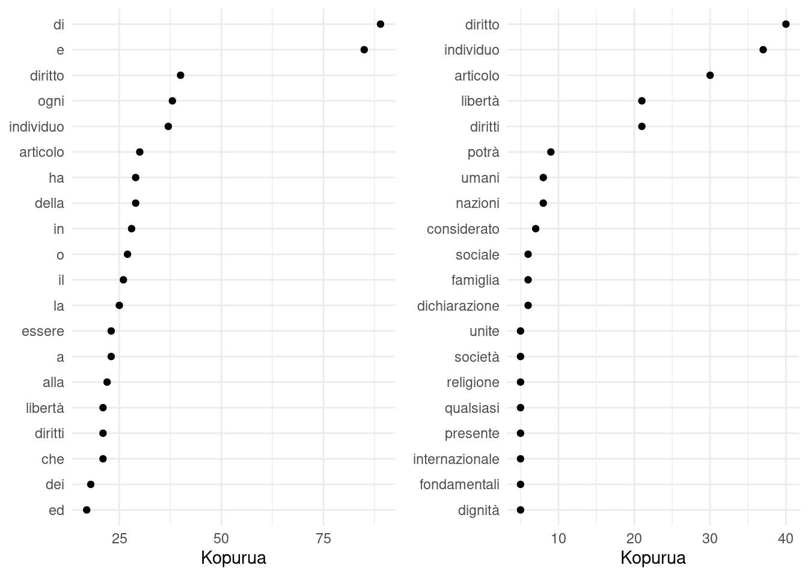
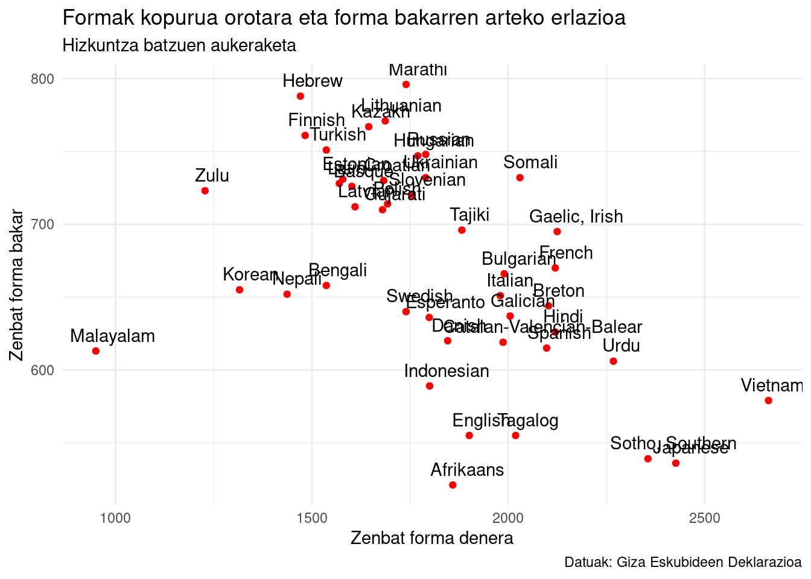
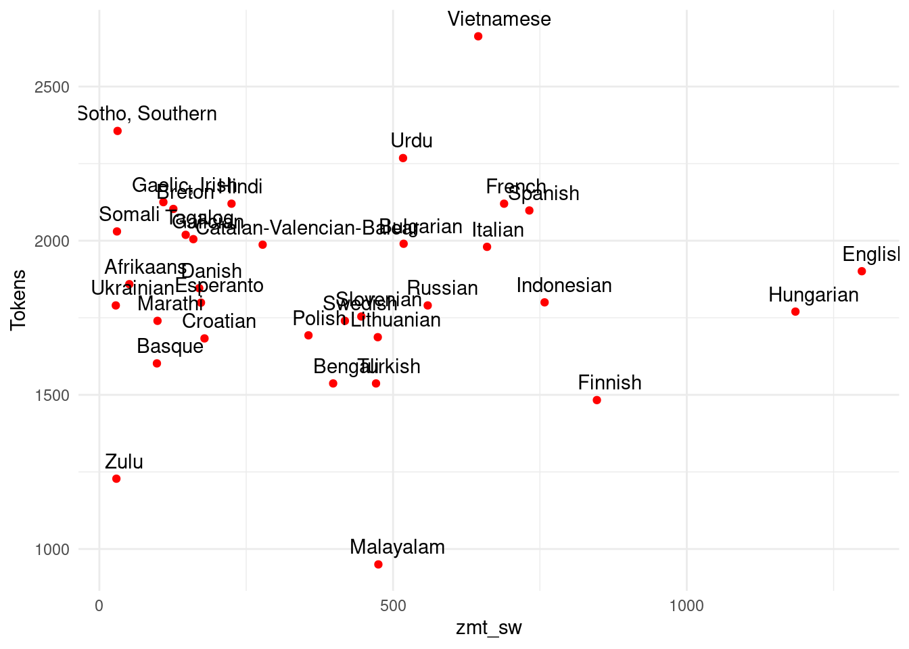
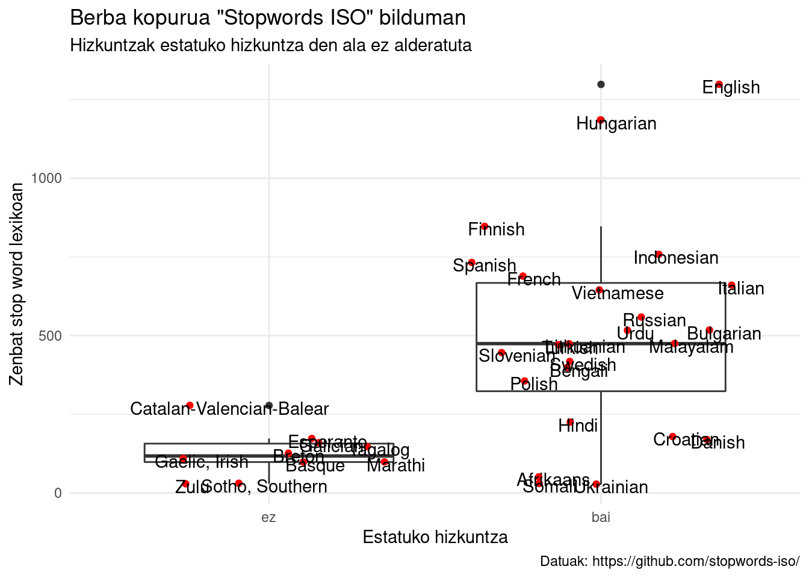

Eman dezagun orain modan dauden erreminta batzuk erabili nahi ditugula, esate baterako ChatGPT. Gaztelaniaz elegante:
/ask ¿Qué fueron las invasiones inglesas de Buenos Aires?
Telegrameko https://t.me/OpenAiChat_bot -ek hau erantzun dit:
Las invasiones inglesas de Buenos Aires fueron dos importantes asedios llevados a cabo por las fuerzas británicas durante el siglo XIX para apoderarse de la ciudad argentina. Estos hechos tuvieron lugar en 1806 y 1807, respectivamente, con el objetivo de capturar la plaza principal y lograr una notoria influencia comercial. Las invasiones terminaron con un fracaso para los británicos pero tuvieron un gran impacto para los habitantes de Buenos Aires al provocar la destrucción del casco urbano y generar graves problemas sociales y económicos.
Baina euskaraz zerbait galdetuta… erantzunak ez du pareko kalitaterik:
/ask Zergatik da garrantzitsua Gernikako aritz hura?
Haren euskarazko erantzuna:
Gernika aritza garrantzitsuak izan daiteke historikoki, eta Gernikan bizi diren kanpainan aurrera ateratzen duen helburua dago. Oso garrantzitsu asko diren itxuska egiturak dituzte hainbat sorkuntza local eta kulturalek uste izanez. Markoanto-reen jauregi bera, Donibane Lohize antzinako fueloakoak eta San Pedro Antiguo gazteluak barne, beste batzuen lana emititu behar dute Gernikarak bere tradizioak teklatu. Gainera, beste erabilera historikoak ditu, emango apurtze esanguratsu ofizialea conciertuetara eta evenimentuetara gonbidatuta egunez egun. Baina horretaz gain, hainbat kultura geografiko barrualdean sortutako tradizioei buruzko informazio garbiagotzeko aldaketa esanguratsua sortzeko elementua da Gernika Arritzatik.
Nik ingelesez ganoraz jakin ez arren, hizkuntza horretan galdetu diot hurrengoa:
/ask Why is not good the ChatGPT performance in Basque language?
Although the ChatGPT system has seen success with some natural language processing tasks, it is not well-suited to Basque. One of the primary causes is due to the fact that Basque is a more complicated language than those with which ChatGPT was designed to work; its unique grammar and syntax are unlike those used for languages such as English or Spanish, making it difficult for the system to comprehend. Additionally, Basque does not have corpus data available in abundance like other languages - meaning there are fewer resources available from which ChatGPT can learn from and draw on for successful conversation.
Argi dago. e-uskaraz zereginik badaukagu. Nik, motibazio handia eta jakintza urri, euskarazko jarduna aztertu nahi dut ea zeregin interesgarririk aurkitzen diodan nire grina aztertzaileari:
Euskaraz idatzizko testuak aztertzeko beste hizkuntza batzuetan erabiltzen diren tresna berberak erabili ditut. Zehazki honetan Quanteda.
Corpus eleanitz bat ezagutzen dut euskararekin batera beste hamaika hizkuntza dituena, horixe berori erabili dut azterketan.
Testu osoa hartu dut bost hizkuntzatan eta aztertu: euskara, ingelesa, gaztelania, frantsesa eta italiera. Testu horren klabea hau da: UDHR. Ea zer ikus daitekeen testu horretaz:
Hemen aurkezten dudan ariketa seguruenera oinarrizkoena izango da, berbak kontatzea eta kontaketa horretan oinarrituta nondik norakoa antzematea:
| Text | Types | Tokens | Sentences | Key | Name | ISO | Direction | |
|---|---|---|---|---|---|---|---|---|
| 95 | cos | 591 | 2171 | 61 | cos | Corsican | cos | ltr |
| 96 | cot | 747 | 1823 | 160 | cot | Caquinte | cot | ltr |
| 97 | cpu | 934 | 2851 | 185 | cpu | Ashéninka, Pichis | cpu | ltr |
| 98 | crh | 715 | 1578 | 32 | crh | Crimean Tatar | crh | ltr |
| 99 | crs | 518 | 1981 | 63 | crs | Seselwa Creole French | crs | ltr |
| 100 | csa | 452 | 2270 | 100 | csa | Chinantec, Chiltepec | csa | ltr |
| Text | Types | Tokens | Sentences | Key | Name | ISO | Direction |
|---|---|---|---|---|---|---|---|
| eus | 726 | 1602 | 62 | eus | Basque | eus | ltr |
| eng | 555 | 1901 | 61 | eng | English | eng | ltr |
| spa | 615 | 2098 | 58 | spa | Spanish | spa | ltr |
| fra | 670 | 2120 | 61 | fra | French | fra | ltr |
| ita | 651 | 1980 | 61 | ita | Italian | ita | ltr |
Ingelesa ez dut-eta ondoegi ulertzen, esanahiaren araberako alderaketetarako, italiera hobetsiko dut batean edo bestean.
Bost hizkuntzetako itzulpenei maila kuantitatiboan begiratzen zaio hurrengo irudian; zenbat forma erabiltzen diren testu horretan. Alderaketa bat egiten da, ea zenbat forma desberdin erabiltzen diren versus zenbat forma behar diren denera.

Bistan da, euskara nahikoa desberdina da. Denera forma gutxiago behar dira UDHR izeneko testu hori emateko beste laurek baino. Bestalde, formak euren artean anitzagoak dira beste hizkuntzen aldean.
Corpus osoari begiratu nahirik, berbarik (formarik) errepikatuenak zein diren kontuan izanda grafiko bat egiten da hurrengoan, berbaren tamainak corpusean duen presentziaren pisua adierazten du:

Lehenengo begirada batean, aurreko irudi horretatik antzeman daitezke kontu bi:
Lehenengo arazo horri oratzeko stopwordak erabiltzen dira1. Hizkuntza bakoitzerako sortuak diren esannahi gabeko hitzen zerrendak dira, honelako azterketetan informazioa gehitu baino oztopatzen duten berbak, alegia.
Segidan, hizkuntzarik hizkuntza aurkezten dira hogei formarik erabilienak, ezkerrean stopword horiek kendu gabe eta eskuinean horiek kenduta.
Horrek lagundu behar luke testuaren nondik norakoaz konturatzen.

Azterketa honetan argi dago ezkerreko irudiko berbek informazio sakonagoa eskaintzen dutela. Baliteke, gainera, argi xamar irudikatzea zertaz diharduen testuak.
Baina begiratu dezagun beste hizkuntzetan ere ea zer ikus dezakegun.

Lehenengo begirada batean, askoz mamitsuago ikusten da eskumaldeko irudiko informazioa.
Eta besteetan?



Euskara ez diren beste hizkuntza guztietan, argiago interpreta daiteke informazioa euskaraz baino.
Hori ikusi izanak eta hizkuntza indoeuropear preposizio askodunak aukeratu izanak lehenengo hipotesi batera eraman nau:
H1: Hizkuntzen ezaugarri morfologikoek baldintzatzen dute.
Ah! Badaezpada, testua hau da: https://www.un.org/en/about-us/universal-declaration-of-human-rights . Gorago aipatutako quanteda paketetako batek hainbat hizkuntzatan dakar hau erabilita: quanteda.corpora::data_corpus_udhr()
Gorago bost hizkuntzarekin sortutako antzerako alderaketa da hurrengoa: Zenbat forma guztira eta zenbat forma bakar behar diren testu horretarako hizkuntza bakoitzean. Honetan, baina, alderatzen diren hizkuntzak dira stopwordak ematen dituzten guztiak.

Azterketa honetan ezaugarrien arteko korrelazioa dagoela antzematen da: zenbat eta forma desberdin gehiago izan, orduan eta forma gutxiago behar direla, alegia. Matematikoki honela aipa daiteke:
\[r_s = -0.552*** \] p-balioa = 0.0001023
Aldagaien artean, beraz, korrelazio ertain eta handien artekoa dago, efektuaren tamaina zeren arabera kalkulatzen den.
Korrelazioak aldagaien azalpen linguistikoak eta stopword kopuruen artean kalkulatuta, ez dugu aurkitu emaitza esanguratsurik (rs = 0.053, p-balioa = 0.77 eta rs = 0.0179, p-balioa = 0.92).
Eta irudian, bestelako sailkapenen bat egon litekeela ere ematen du:
 Hungariera ere, euskararen antzera, hizkuntza eranskaria da, ingelesa ez. Horiek dira forma gehien dituztenak. Hirugarren postuan finlandiera, euskararen antzera eranskaria hori ere. Bestalde, euskara zulu, sotho, afrikaans eta beste hizkuntza batzuekin batera dago.
Azalpenak bestelako aldagaia behar du:
Politikak errazago. Multzo bi egin dira, estatua duten hizkuntzak eta estaturik gabekoak.

Aurreko konparaketan katalana, nahiz eta Andorrako hizkuntza ofiziala izan, ez dut jaso estatuko hizkuntzatzat. Hindia, nahiz eta Indiako hegoaldean ez izan ohiko hizkuntza, estatuduntzat hartu da. Tagalo/filipino hizkuntzaren inguruko gatazkak kontuan izanda, hori ere ez dut hala jaso. Amaitzeko, Irlandako galesa ere ez dut estatuduntzat jaso, han ere ingelesa lehenesten delakoan.
Estatistikoki esanguratsua da aurkitutako aldea. Wilcoxon-Mann-Withney testa erabilita, W = 31*** ematen du p-balioa = 0.00038 dela.
Agerian dago banaketa bitar hori baino sakonago azter litekeela. Baina, hainbat egiteko dagoenez, akaso, interesgarriagoa da euskarazko stopword eraginkorragoak sortzea.
Urte barri g on!
stopword hori bat edo batean aurkitu dut “hitz hutsak” forman. Gaztelaniaz ere palabras vacias. Berez, ez nago seguru argi dagoen, berba hutsak esanda, hutsik dauden berbak ulertzen den. Gainera, ez dakit hutsik dauden benetan. stopword inperialistarekin geratu naiz artikulutxu honetan.↩︎